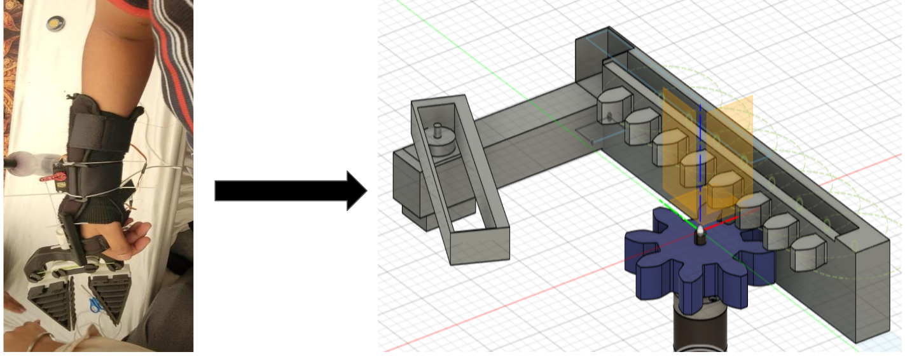

Skandhan Karthikeyan (aka) Skandy
MSE student in Mechanical Engineering & Applied Mechanics (Mechatronics & Robotics Systems) at the University of Pennsylvania.
I build systems that sit at the junction of real-time embedded software, control theory, and applied ML, from diagnostic firmware on the factory floor to observer-based controllers for networked robots. B.Tech in Mechanical Engineering from IIT Madras, where I also led the Electronics Club as Controls Engineer and Team Lead (2023–2024).

What Drives Me
I am a systems engineer who believes that the gap between a working prototype and a physics-based deployable system is where the real engineering happens. My focus is on closing that gap, designing control architectures and embedded pipelines that are robust in the field. I look for problems where hardware constraints, real-time requirements, and algorithmic complexity all collide.
Experience

What Built an electro-mechanical glove adaptation (VersaGrip) with 6 hobbyists to assist paraplegic users with day-to-day fine-motor tasks.
How Developed the ESP32-C3 based PCB and multi-motor control system; also implemented deformation detection workflows at JSW Steel using signal preprocessing and rule-based methods.
Result Delivered an assistive embedded prototype and practical industrial diagnostics experience.
What Investigated actuator and network delays in decentralized robotic systems during junior-year fall.
How Developed simulation frameworks and analysis scripts in MATLAB/Simulink to model and evaluate delay effects.
Result Established baseline delay behavior and built the foundation for observer-based compensation work.
What Extended delay analysis to robust compensation in networked robotic systems.
How Formulated observer-based compensation and corrective feedback strategies; validated across variable-delay profiles.
Result Improved system cohesion and transition robustness under communication delays.

What Existing PeGS implementations were computationally restrictive for larger granular particles.
How Simplified equations in PeGS formulation and explored invasive friction-coefficient evaluation for Vishay PhotoStress particles, with MATLAB-based visualizations and scripts.
Result Reduced solve complexity for larger configurations. View presentation.

What Designed and evaluated a lightweight multi-sensor perception pipeline for a safety-critical autonomous system.
How Implemented in Python using CARLA, emphasizing robustness and real-time feasibility.
Result Built a reproducible simulation and evaluation stack. View presentation.

What Long-term initiative toward Learning-to-Optimize methods for autonomous racing control.
How Developed simulation workflows based on Non-linear MPC for Linear Predictive Control objectives.
Result Produced simulation insights and groundwork for future controller refinement.
Lab-side Leadership
Course Assistant - TinyML (ESE 3600), University of Pennsylvania (Aug 2025 – Nov 2025)
Challenge: The course was migrating its embedded lab infrastructure mid-semester,
with students needing to port Arduino-IDE workflows to PlatformIO (Espressif IDF) on
the Seeed Studio XIAO ESP32S3 Sense.
Action: Rewrote and tested all lab project codebases, spanning Magic Wand, Wake-word detection, etc. for the new toolchain,
reimplemented embedded inference pipelines, and created reference documentation.
Outcome: The new codebases became the starting point for future cohorts.
Tools I Wield
Software
Hardware & Embedded
Design & Fabrication
Moments That Mattered
- October 2025 : ThinkCAD team accepted into the Wharton Generative AI Studio
- May 2025 : Ranked in the top 15% of the 2021–2025 batch at IIT Madras
- December 2024 : Selected as a UNAI Millennium Fellow, Class of 2024
- August 2024 : Best Presentation, Young Investigator Workshop — International Soft Matter Conference 2024
- January 2023 : Vice-Captain of the Institute Squash team @ IIT Madras
- November 2021 : AIR 2401 (top 1.69%) in JEE Advanced 2021 · AIR 2242 (top 0.24%) in JEE Main 2021